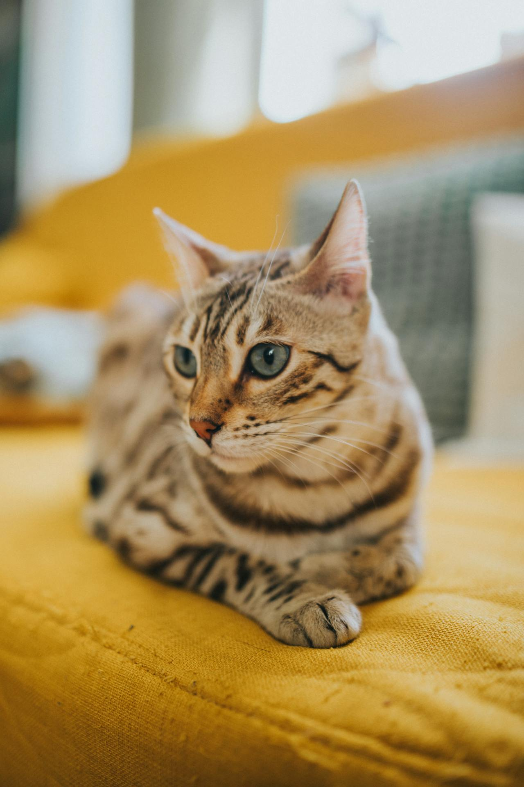
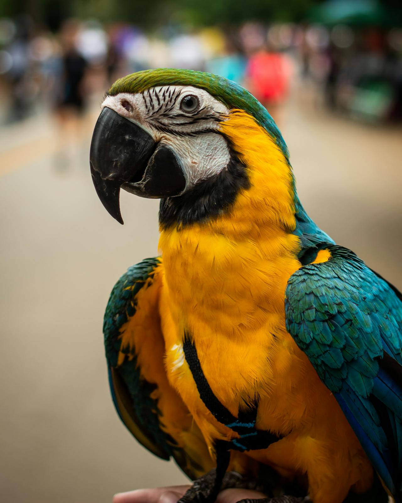

Canela
Canela es una perrita de 2 años, de raza mestiza. Le gusta mucho jugar con su pelota y salir a pasear. Es muy cariñosa y le encanta estar cerca de su familia. A veces puede ser un poco traviesa, pero siempre es muy dulce y leal.
Canela es una perrita de 2 años, de raza mestiza. Le gusta mucho jugar con su pelota y salir a pasear. Es muy cariñosa y le encanta estar cerca de su familia. A veces puede ser un poco traviesa, pero siempre es muy dulce y leal.

Kid minino. Se llama así porque pasa todo el tiempo molestando y dando manotazos a su hermana canela. Es un gato de 3 años, de raza mestiza también. Es muy juguetón y le encanta trepar por los muebles. A pesar de su actitud traviesa, es muy cariñoso y le gusta estar cerca de su familia.

Cocoa o simplente Coco, es una guacamaya que rescatamos de una palmera hace un par de años. Es muy inteligente y le encanta aprender trucos nuevos. Es muy sociable y le gusta estar cerca de su familia. No sabe hablar, pero es muy expresiva y siempre está dispuesta a jugar y pasar tiempo con sus dueños.